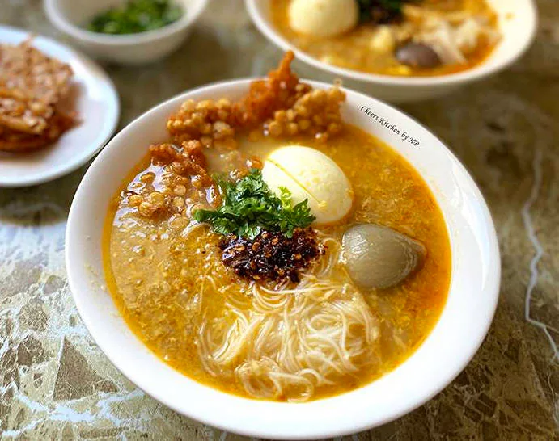

Moke Hin Khar
Myanmar Traditional Food

Ingerients
- 500g rice noodles
- 500g catfish or snakehead fish, cleaned and cut into pieces
- 6 cups water
- 3 tablespoons ngapi (fermented fish paste)
- 2 stalks lemongrass, bruised
- 1-inch piece of ginger, sliced
- 4 cloves garlic, minced
- 2 shallots, sliced
- 1 teaspoon turmeric
- 2 tablespoons fish sauce
- 2 tablespoons peanut oil
- Crispy fried fish (optional)
- Boiled eggs (optional)
- Fried garlic (optional)
- Vegetables such as cabbage, bean sprouts, and coriander (optional)
Instruction
Step by Step
-
Soak the rice noodles in water for 30 minutes or until soft. Drain and set aside.
-
In a large pot, bring the water to a boil. Add the fish, ngapi, lemongrass, ginger,
garlic, shallots, turmeric, fish sauce, and salt. Reduce heat and simmer for 20-30 minutes
or until the fish is cooked through and the broth is fragrant.
-
Remove the fish pieces from the pot and set aside. Strain the broth through a sieve and discard the solids.
-
In a separate pan, heat the peanut oil over medium heat. Add the rice noodles and stir-fry for 2-3 minutes.
-
In a separate pan, heat the peanut oil over medium heat. Add the rice noodles and stir-fry for 2-3 minutes.
Enjoy your Myanmar Moke Hin Khar!